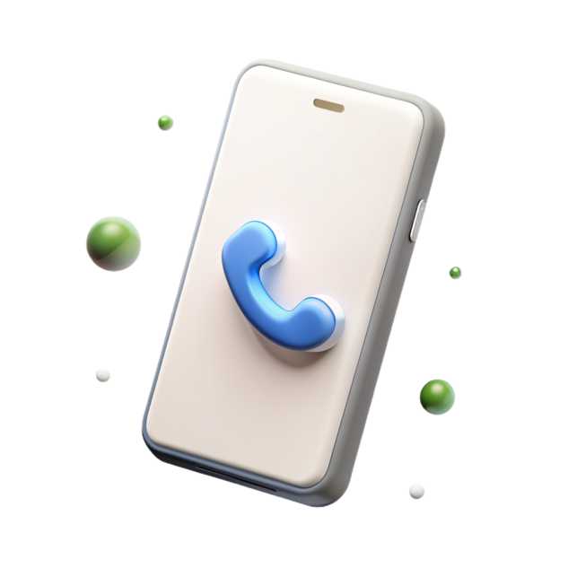

<section class="directions section">
    <div class="container">
        <div class="directions_inner why_inner" style="background-image: url(./assets/images/why/Layer1.svg);">
            <ul class="directions_inner_menu list-reset">
                <li><a href="#">РАС</a></li>
                <li><a href="">Запуск речи</a></li>
                <li><a href="">СДВГ</a></li>
                <li><a href="">Нарушения речи</a></li>
                <li><a href="">Детская психология</a></li>
                <li><a href="">Нейропсихология</a></li>
                <li><a href="">Ранняя помощь</a></li>
                <li><a href="">Детский психиатр</a></li>
                <li><a href="">Письмо, чтение, обучение</a></li>
                <li><a href="">Нарушения слуха</a></li>
            </ul>
            <div class="img-wrap">
                
            </div>
        </div>
    </div>
</section>

<section class="question section">
    <div class="container">
        <div class="grid-row --green">
            <div class="question_item">
                
            </div>
            <div class="question_item">
                <h2 class="project_title-main --white">ХОТИТЕ ЗАДАТЬ ВОПРОС?</h2>
                <p>Свяжитесь с нами, чтобы получить консультацию или записаться к специалисту</p>
                <a href="" class="project_link --white">Заказать обратный звонок</a>
            </div>
        </div>
        <a href="" class="project_link swiper_slide_mobile --green">Заказать обратный звонок</a>
    </div>
</section>